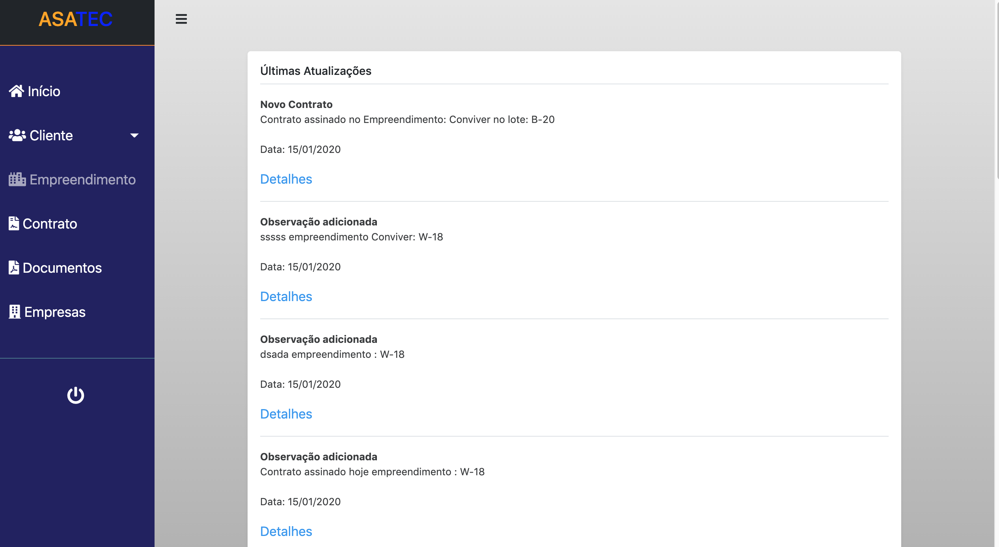
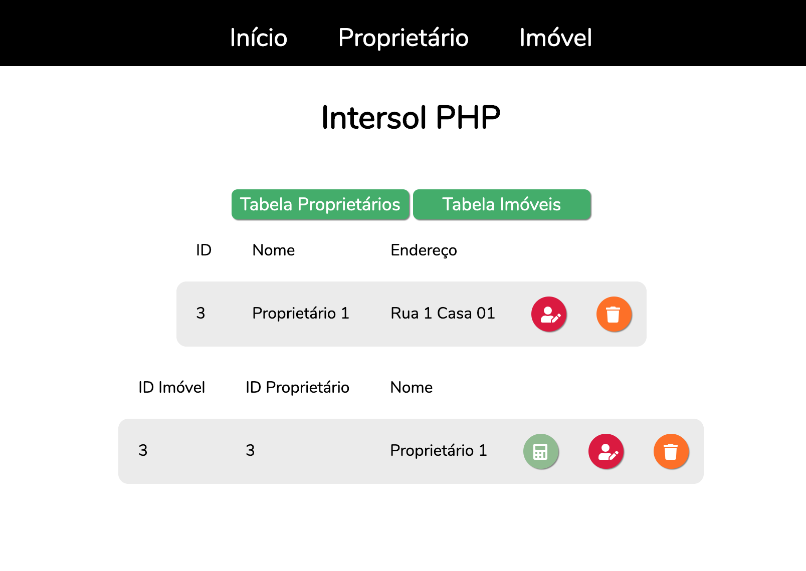
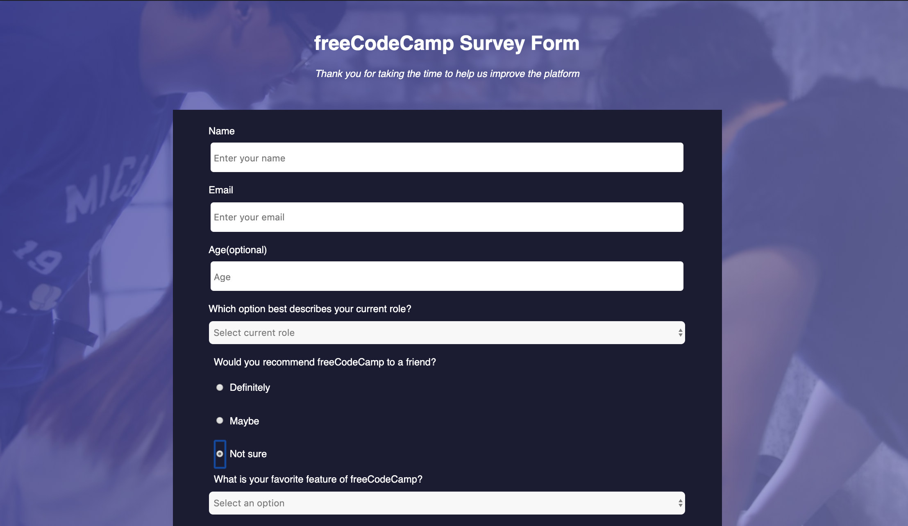
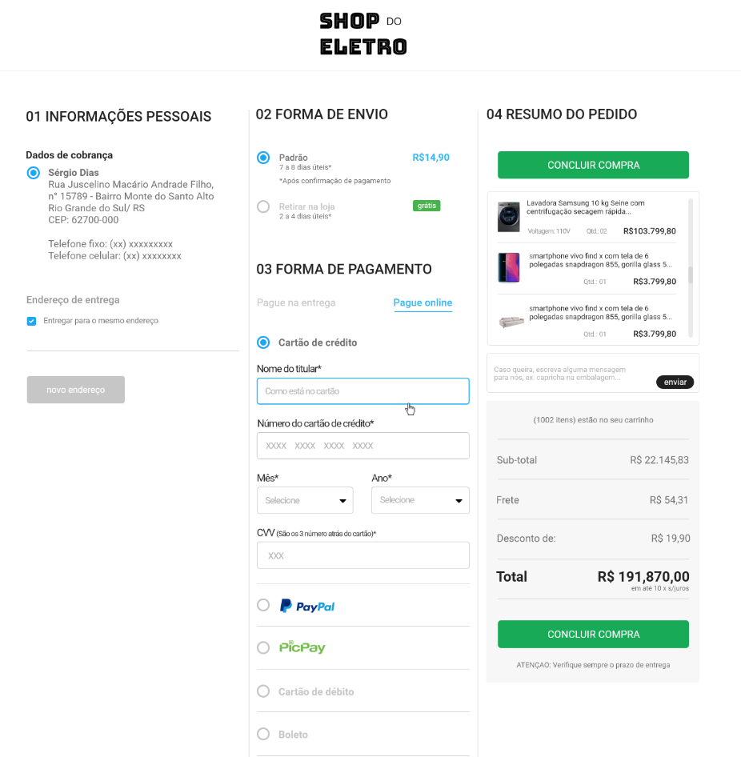
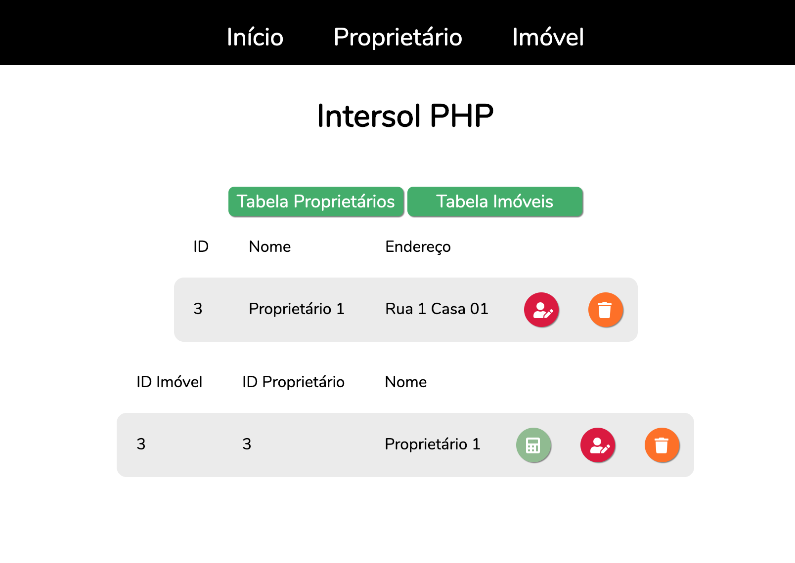
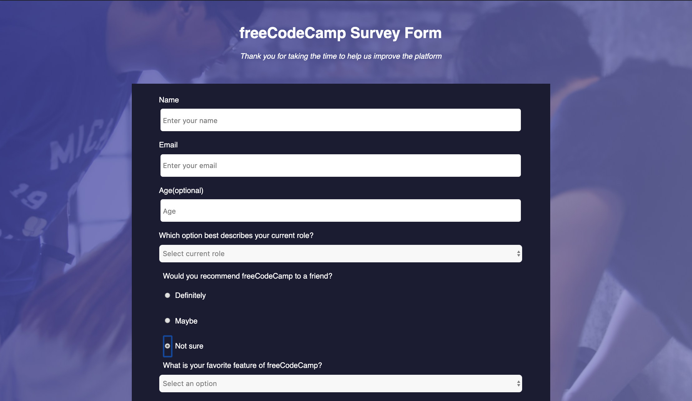
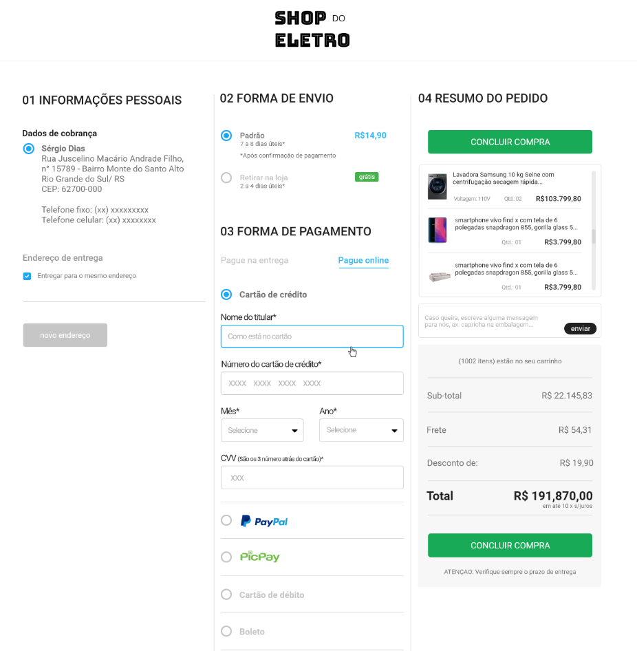

Bem vindo ao meu Portfolio
Sobre
Oi, sou o Fabricio, focado em desenvolvimento Front-end e com conhecimento em desenvolvimento PHP/Laravel.

Código e Documentação no repositório do GitHub.
Clique para ir ao projeto 
Código no repositório do GitHub.
Clique para ir ao projeto 
Código no codepen. 
Código no repositório do GitHub.
Protótipo ERP PHP/Laravel
Protótipo de um ERP desenvolvido em Laravel/PHP para back-end e CSS puro e Bootstrap para front, MySQL para BD e deploy no Heroku. Sistema para um controle simples de processos e contratos com opção para cliente acompanhar o andamento do processo.Código e Documentação no repositório do GitHub.
Clique para ir ao projeto 
Aplicação PHP
CRUD simples em PHP para cadastro de proprietário e imóvel, usando MySQL como banco de dados e CSS puro para estilização da página.Código no repositório do GitHub.
Clique para ir ao projeto 
Formulário Simples
Formulário simples feito para o FreeCodeBootcamp, usando apenas CSS puro para estilização, sem validação ou backend.Código no codepen. 
Página de Pagamento
Página protótipo de realização de pagamento em loja virtual. Página desenvolvida para teste front-end, utilizando CSS puro para estilização de toda a página e sem validação nos formulários.Código no repositório do GitHub.